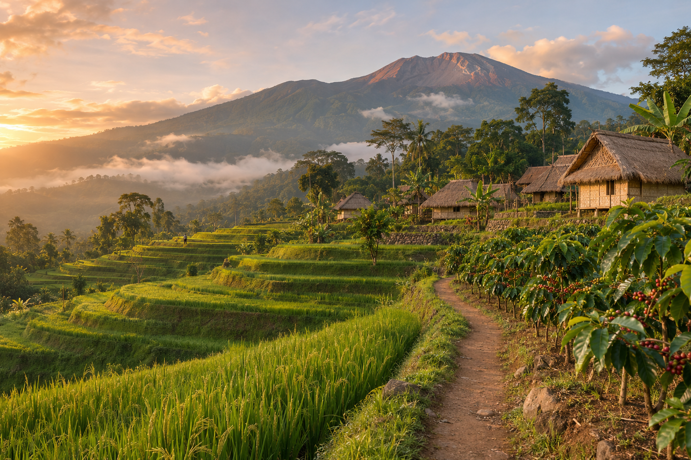
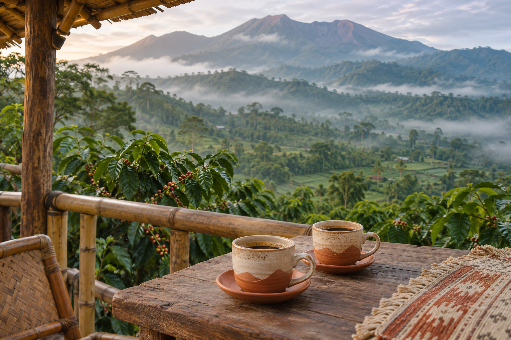
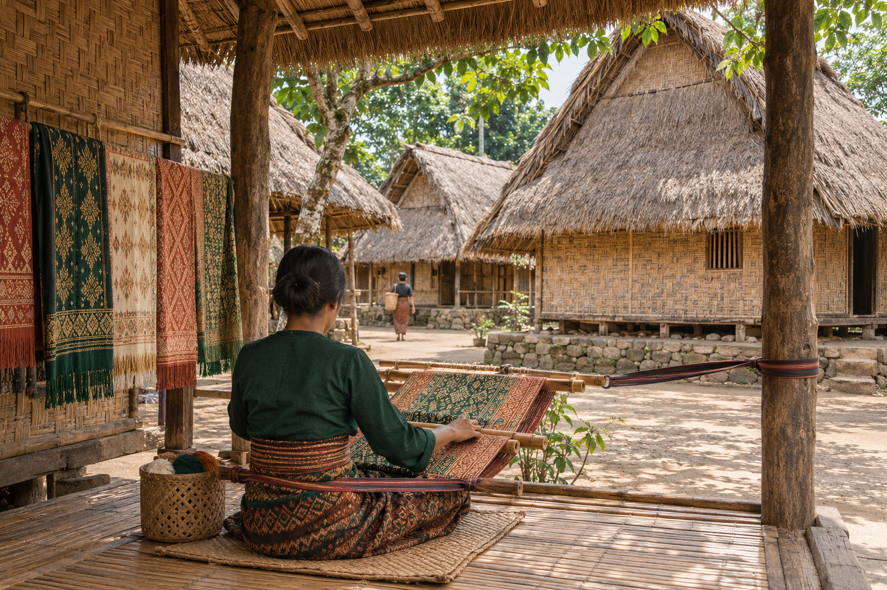
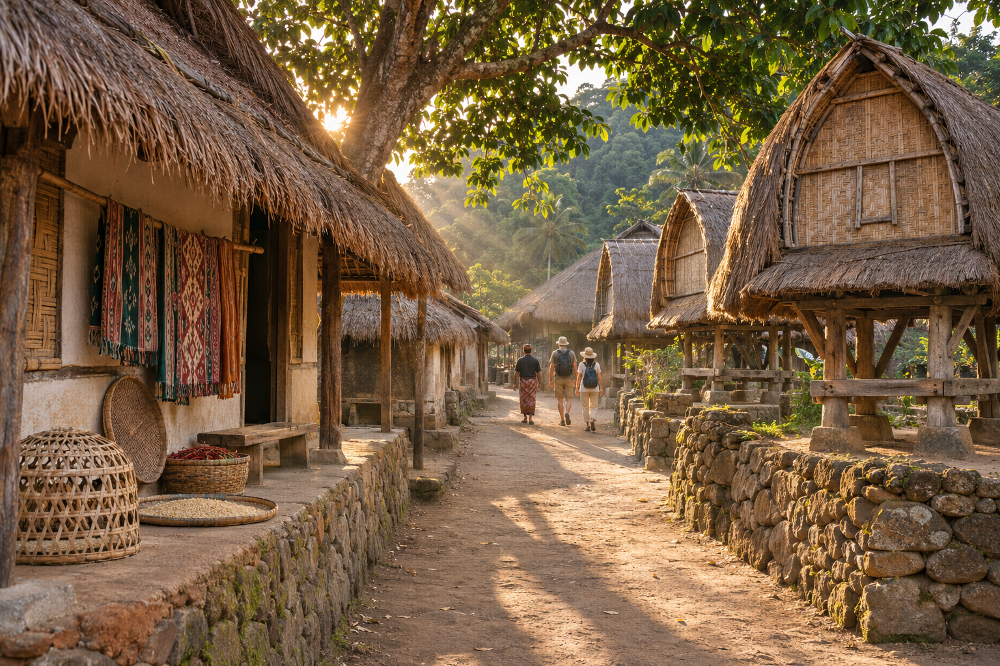
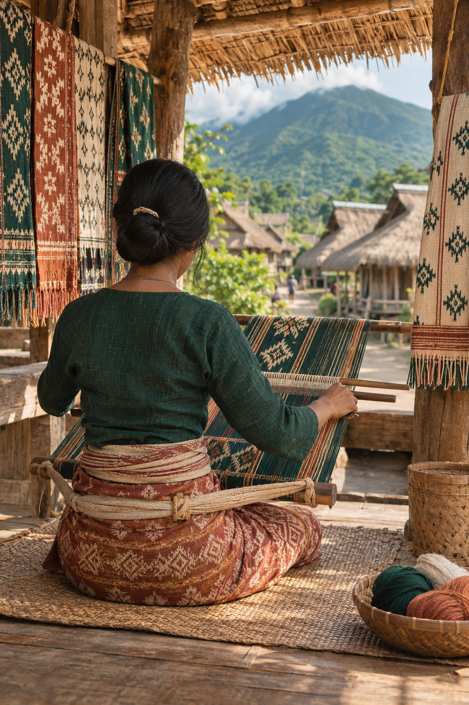

Catatan tuan rumah · Lombok & GiliMenjelajahi Lombok
dari mata warga lokal.
Dari teluk Mandalika hingga pagi berkabut di Senaru. Mulai dari tempat singgah, lalu temukan cerita di sekitarnya.

Catatan tuan rumah · Lombok & GiliDari teluk Mandalika hingga pagi berkabut di Senaru. Mulai dari tempat singgah, lalu temukan cerita di sekitarnya.


Prototipe interaktif · katalog dan harga contoh
Koleksi destinasi · contoh konten agen
Dari vila pesisir ke pondok gunung. Pilih suasana untuk perjalanan Anda.
Contoh konten agen
Pilihan dan tarif ilustratif
Seharian Penuh (08:30 - 16:30)

4 Jam Eksplorasi Budaya
3 Jam Praktik Langsung

“Kenali dulu sudut pulau yang ingin Anda tinggali. Pesisir yang hangat, pagi di kebun kopi, atau jalan kecil menuju rumah perajin?”
Jelajah Lombok menyatukan tempat singgah dan pengalaman dalam satu rencana perjalanan yang bisa Anda susun pelan-pelan.
Tim Jelajah Lombok
Cerita merek ilustratif · contoh konten agenPilih pesisir, pulau kecil, atau kaki gunung sesuai ritme perjalanan Anda.
Baca fasilitas, kebijakan, dan contoh harga dalam satu tempat.
Simpan penginapan dan pengalaman pilihan, lalu tinjau kembali sebelum memesan.
Dari hari pertama hingga perjalanan pulang, mulai dengan tempat yang ingin Anda kenal lebih dekat.
Formulir contoh · belum mengirim pesan
Pilih kawasan, tanggal, jumlah kamar, serta tamu per kamar. Lengkapi usia setiap anak, lalu tekan tombol pencarian.
Belum. Ini prototipe dengan katalog dan estimasi ilustratif. Pengecekan nyata membutuhkan koneksi ke layanan pemesanan Ortasys.
Implementasi produksi menggunakan penyedia pembayaran. Prototipe ini hanya menyimpan ringkasan contoh dan tidak menagih atau membuat reservasi.